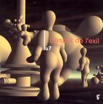

| Artist: | Lu 7 |
| Title: | L'Esprit De L'Exil |
| Label: | Musea FGBG 4572/Intermusic IM-003 |
| Length(s): | 53 minutes |
| Year(s) of release: | 2004 |
| Month of review: | [06/2005] |
| 1) | Itsumo Hajimari | 1.30 |
| 2) | Canary Creeper | 5.11 |
| 3) | Golem | 6.45 |
| 4) | Bluetail Of Passage | 4.33 |
| 5) | Air Flow | 5.16 |
| 6) | Secret Recipe | 4.50 |
| 7) | L'esprit De L'exil | 7.03 |
| 8) | Mariana's Garden | 5.30 |
| 9) | Danse Rituelle Du Feu | 5.52 |
| 10) | Ripple (mizu No Wa) | 6.20 |
We hear a lot of guitar melodies, both electrical and acoustic, supported by strings. The influence of Allan Holdsworth can be heard when the electric guitar is used. However, the muzaky synth back drop at times move dangerously close to 'casio concertos' mimicking violin mostly, but harp as well. Furthermore we hear some ditty-like bits, culminating in some sections in Secret Recipe. Mariana's Garden brings a sort of bossanova track. Danse Rituelle Due Feu is a bit of Tomita. With a beat. And a quote of Sabre Dance. Closer Ripple brings some traditional Japanese motifs in the background.
Musically I would say this release fits in with a number of instrumental releases Musea did some three years ago, such as Alan Loo, Sombre Reptile and Eclat. I'm not saying the bands are the same as this one, but the music is instrumental, rather accessible and melodic. One might also feel that there are references to several of the late eighties female keyboardists (where have they gone, by the way?). Even though Itsumo Hajimari appears to quote the theme of The Lamb, there is not a lot of progressive content on the whole. I guess references to new age, jazz rock or muzak are at times just as appropriate as one to prog.